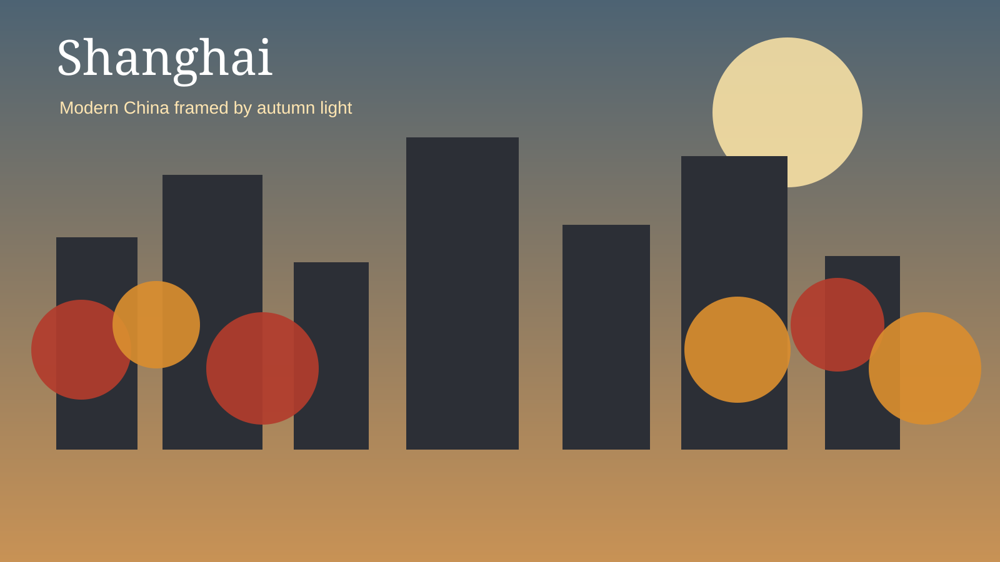
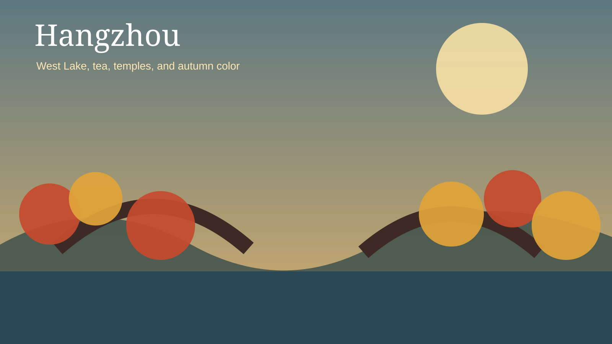
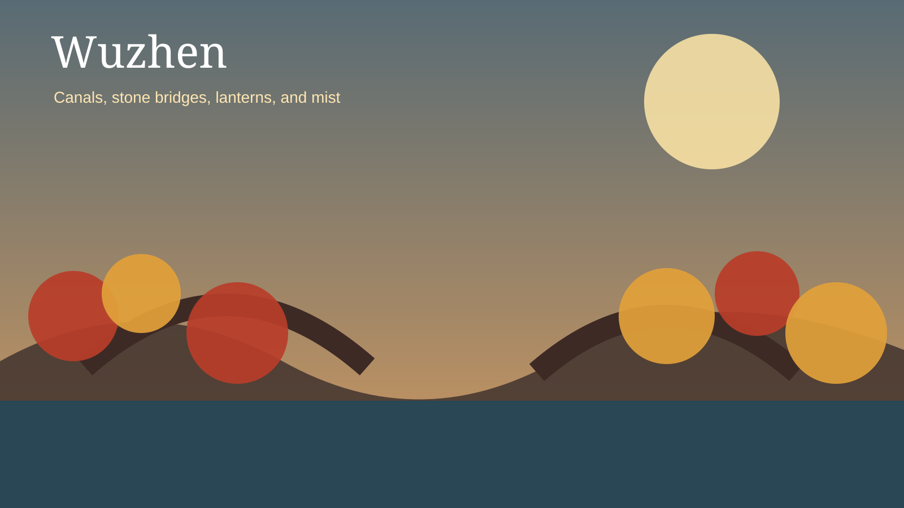
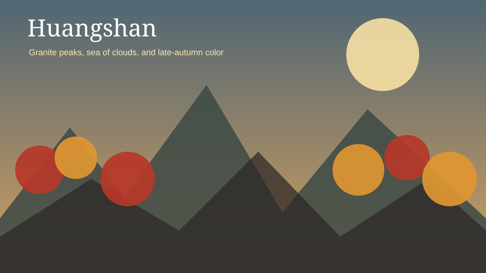
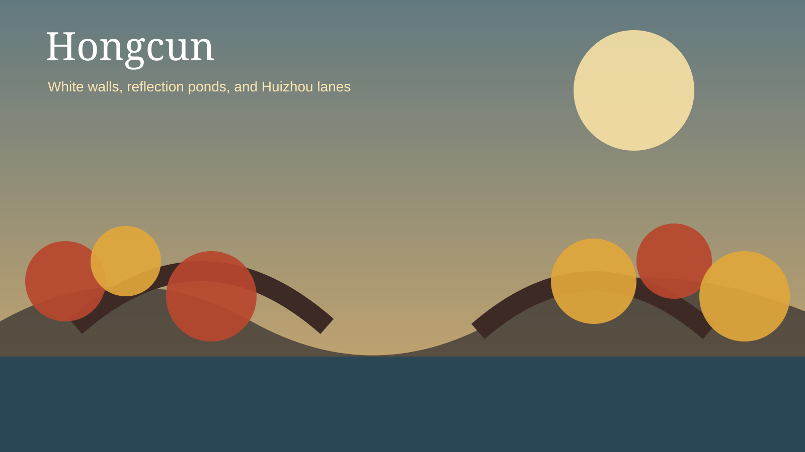

Autumn First
The route is designed around seasonal color, cool weather, tea landscapes, mountain atmosphere, and reflective water towns.
November 2026 · 10 Days
Shanghai · Hangzhou · Wuzhen · Huangshan · Hongcun
Why This Trip
The route is designed around seasonal color, cool weather, tea landscapes, mountain atmosphere, and reflective water towns.
Stays are grouped logically, with only the hotel changes needed to experience each region well.
High-speed rail and private transfers keep the journey efficient without turning it into a rushed checklist.
Five Chapters

3 nights
The Bund, Yu Garden, French Concession, and Shanghai cuisine.

2 nights
West Lake, Lingyin Temple, Longjing Tea Village, and autumn walks.

1 night
Canals, bridges, lanterns, traditional streets, and blue-hour photography.

3 nights
Sea of clouds, sunrise, cable cars, granite peaks, and cool-weather scenery.

Day excursion
Reflection ponds, ancient lanes, white walls, black roofs, and slow exploration.
Route